作者：创世魂
● 概述
工具条是一种N个按钮集合在一起的组件，支持设置图片和排列方式，其组件默认位于窗口顶部位置，可通过“位置”属性调整其显示位置。
其效果如下：
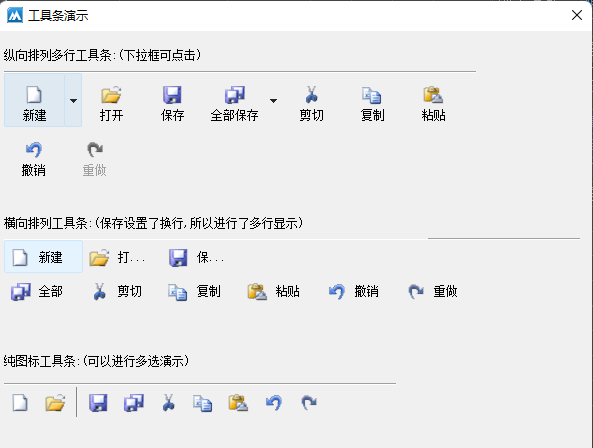
● 工具条按钮(写)
帮助文档如下图：
通过本属性可设置工具条上显示的按钮，属性值为文本型，只能在属性表中调用。
每列信息为以'\n'字符分隔的字段,各个字段的意义为:
1. 整数: 图片索引,-1 表示本按钮无图片.
2. 整数: 按钮状态
3. 整数: 按钮风格
4. 文本: 标题
5. 文本: 提示
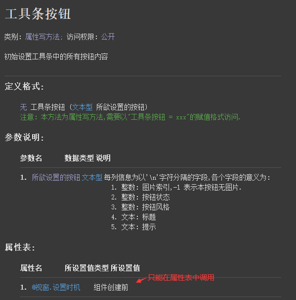
操作流程如下：
实际开发中不需要手动输入工具条按钮的文本数据，火山内置了工具条按钮设计器，可以很方便的设计按钮信息。
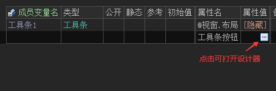
打开设计器后点击“向后插入”就可以插入按钮，然后根据自己的需求设置合适的属性信息，最后点击“确定”保存即可。
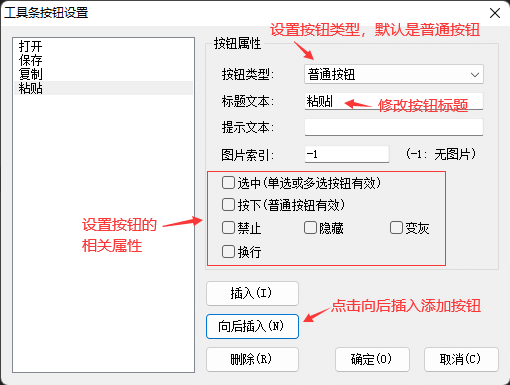
保存后会自动生成相关的文本数据。
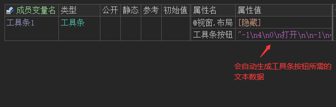
运行效果如下图：
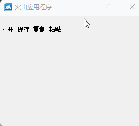
● 位置(写)
帮助文档如下图：
本属性用于设置工具条按钮的位置，默认在窗口顶部位置显示。
注：本属性不支持动态调用，且在界面设计器中始终是“自由”位置。
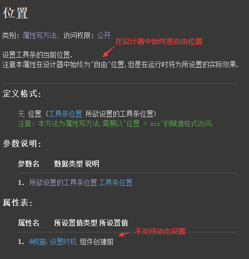
代码编写如下图：
本属性共有三个选项，根据自己的需求选择一个即可。
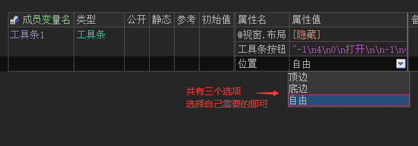
运行效果如下图：
当属性设置为“自由”时，软件运行后工具条就可以显示在其它位置。
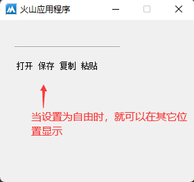
● 上边线(写)
帮助文档如下图：
用于设置工具条是否存在上边线，默认本属性为真。
注：本属性不支持动态调用。
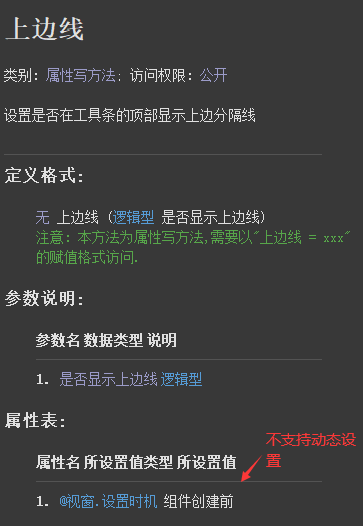
界面设计器预览如下：
虽然本属性不支持动态调用，但是在界面设计器中可以预览其修改后的效果，当本属性设置为假后上边线消失。
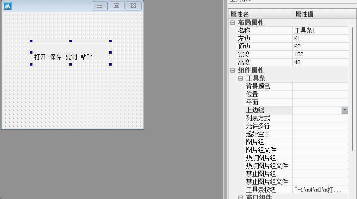
● 允许多行(写)
帮助文档如下图：
用于设置工具条按钮是否支持多行显示。
注：本属性默认为真，且不支持动态调用。
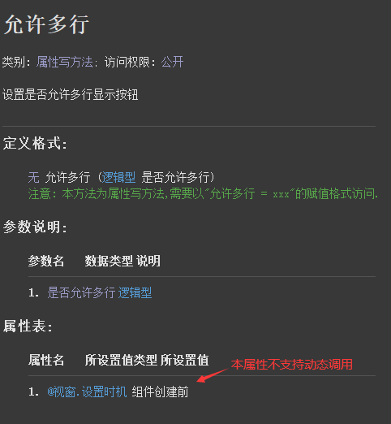
界面设计器预览如下：
当本属性设置为假后，工具条按钮将取消自动换行效果。
注：当本属性为真且组件高度不够时，软件运行后工具条会自动调整组件高度使其能够完整的显示所有按钮。
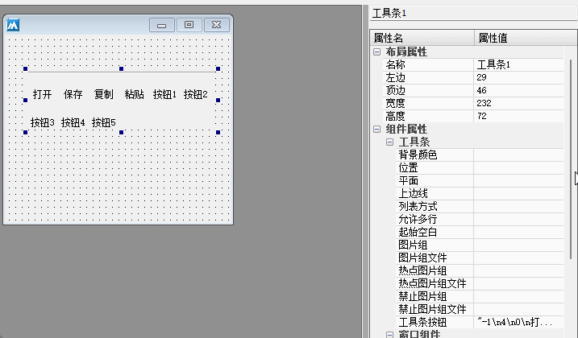
● 图片组(写)
帮助文档如下图：
用于设置工具条正常状态下的图片组。
注：本属性不支持动态调用。
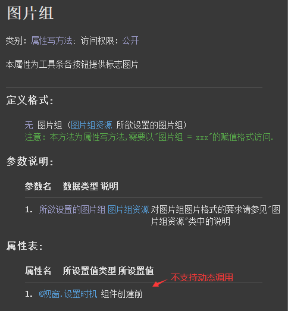
代码编写如下图：
准备一个正常状态下显示的图片组，如下所示：
将其设置给“图片组”属性。
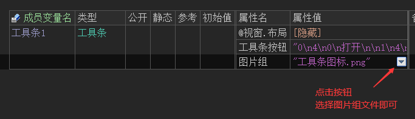
打开工具条按钮设计器，就可以设置图片索引，索引从0开始。
注：图片索引不区分图片组、热点图片组和禁止图片组，索引都是统一的。
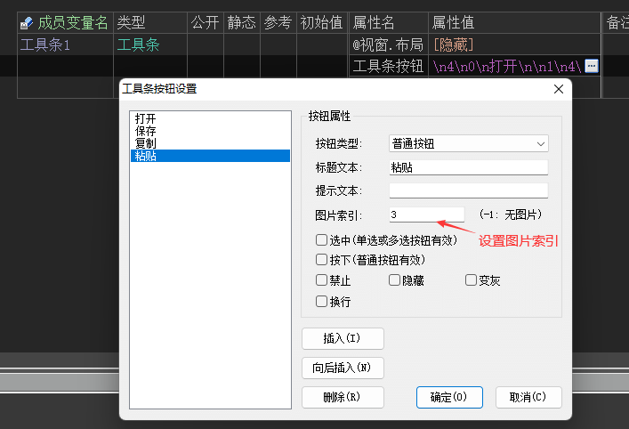
运行效果如下图：
最终图片组将显示在工具条上。
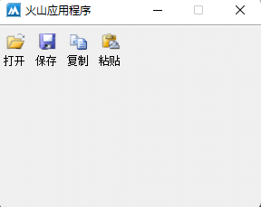
● 热点图片组(写)
帮助文档如下图：
本属性用于设置当鼠标经过工具条按钮时显示的图片组。
注：本属性仅当平面属性为真时有效，且不支持动态调用。
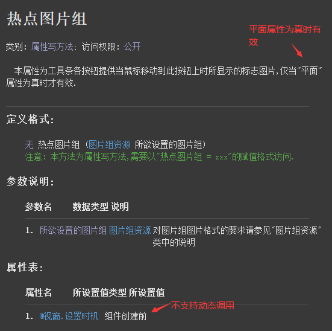
代码编写如下图：
准备一个热点图片组，如下所示：
将其设置给“热点图片组”属性即可。
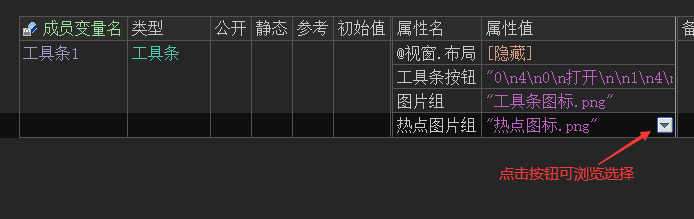
运行效果如下图：
最终当鼠标经过时会显示热点图片组。
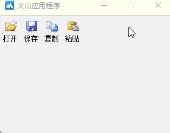
● 禁止图片组(写)
帮助文档如下图：
本属性用于设置工具条或工具条按钮被禁止时，显示的图片组。
注：本属性不支持动态调用。
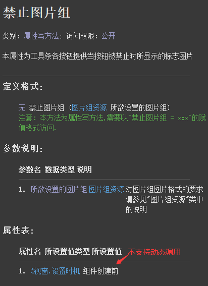
代码编写如下图：
1、准备一个禁止状态下显示的图片组。
2、在属性栏设置引用禁止图片组。
3、按钮1点击后禁止第一个按钮，按钮2点击后禁止整个组件。
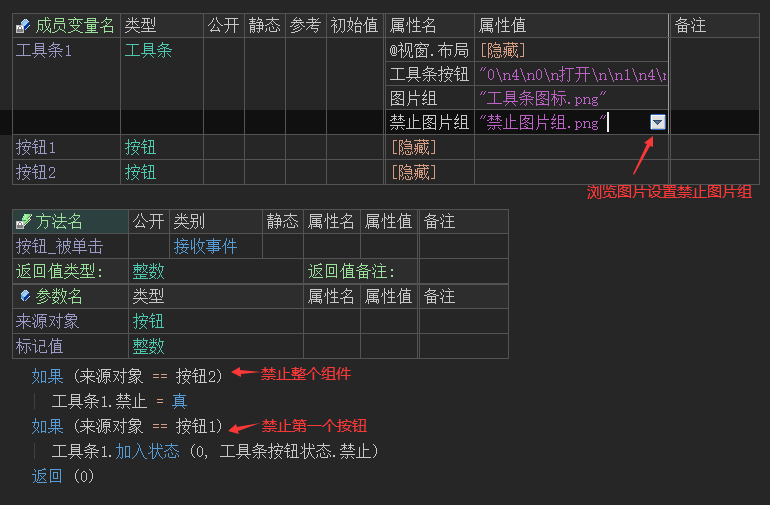
运行效果如下图：
最终当按钮或组件被禁止时，都可以正常显示禁止图片组。
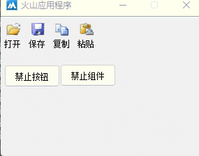
● 列表方式(写)
帮助文档如下图：
本属性用于设置文字和图标的排列方式，当本属性为真时，文字将显示在图标的右侧。
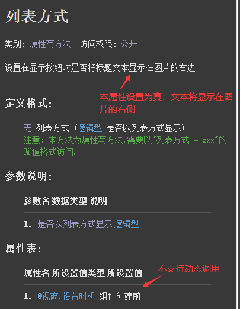
代码编写如下图：
因本属性不支持动态调用，只能在属性栏设置本属性。
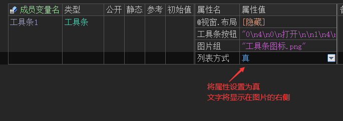
运行效果如下图：
最终文字将显示在图标的右侧。
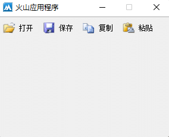
● 背景颜色(写)
帮助文档如下图：
通过本属性可修改组件背景颜色。
注：本属性的设置时机为“组件创建前后”，因此支持动态调用。
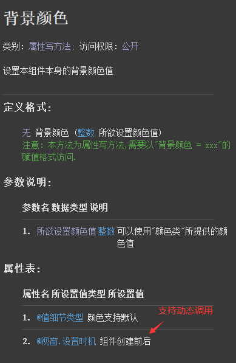
代码编写如下图：
按钮点击后修改背景颜色为白色。
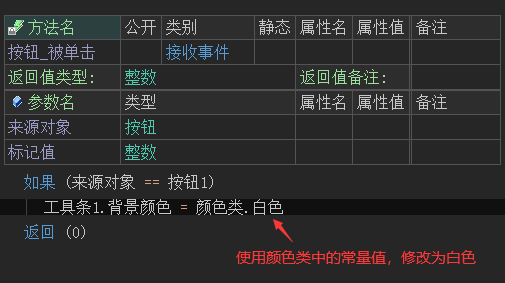
运行效果如下图：
最终背景颜色将修改为白色
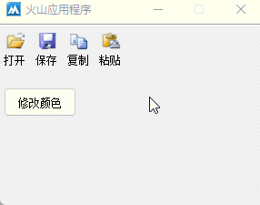
● 起始空白(写)
帮助文档如下图：
通过本属性可设置工具条首部的空白距离，单位像素。
注：本属性不支持动态调用。
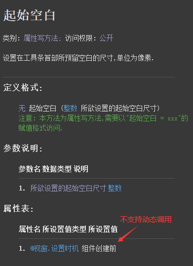
代码编写如下图：
直接在属性栏设置本属性即可。
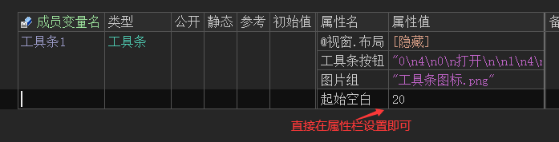
运行效果如下图：
最终工具条首部将会有20像素的空白。
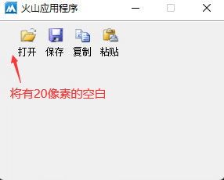
● 插入按钮
帮助文档如下图：
顾名思义，通过本方法可在工具条中插入一个按钮，本方法共有六个参数。
参数1：设置插入位置，从0开始，提供-1插入到最后。
参数2：设置工具条类型，调用方式为“工具条按钮类型.XXX”，默认为普通按钮。
参数3：设置图片索引，没有设置图片组可忽略。
参数4：设置按钮标题，默认为空文本。
参数5：设置提示文本，默认为空文本。
参数6：设置按钮状态，调用方式为“工具条按钮状态.XXX”，注意其中“选中”状态仅在按钮类型为多选按钮或单选按钮时有效。
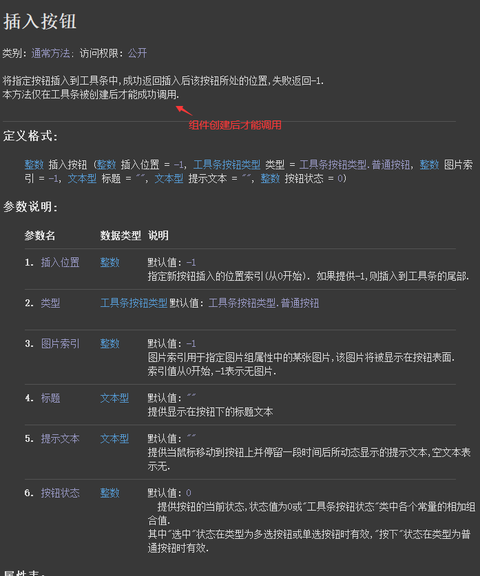
代码编写如下图：
按照自己的需求，插入需要的按钮类型即可。
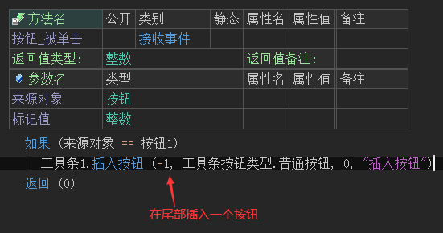
运行效果如下图：
最终新按钮会插入到工具条尾部。
注：如果新插入的按钮标题长度大于其它任何按钮标题长度，则工具条会自动调整按钮间距。
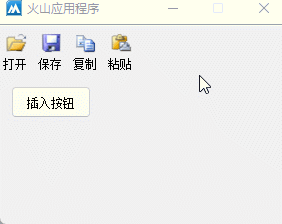
● 删除按钮
帮助文档如下图：
通过本方法可删除指定按钮，按钮索引从0开始。
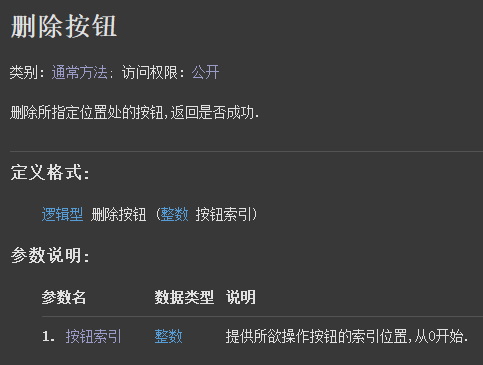
代码编写如下图：
按钮点击后删除工具条的第一个按钮。
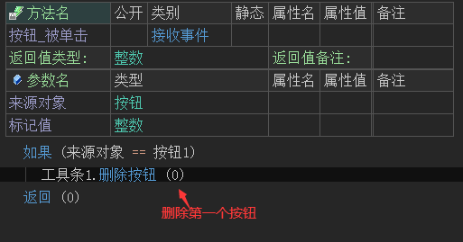
运行效果如下图：
最终第一个按钮将被删除。
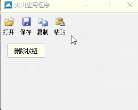
● 加入状态
帮助文档如下图：
本方法共有两个参数。
参数1：提供按钮索引，从0开始。
参数2：提供“工具条按钮状态”类中的常量值。
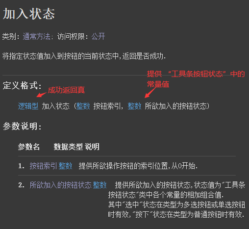
本方法是一个多功能方法，通过“工具条按钮状态”中的5个常量值，可以实现不同的显示效果。
注：其中“选中”只有在工具条按钮类型为多选或单选时有效，“按下”状态在类型为“普通按钮”时有效。
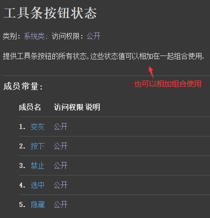
代码编写如下图：
例如想要设置“选中”状态，首先将按钮调整为“多选按钮”。
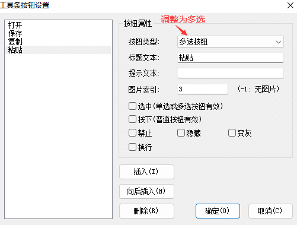
然后就可以调用本方法动态的设置为选中状态。
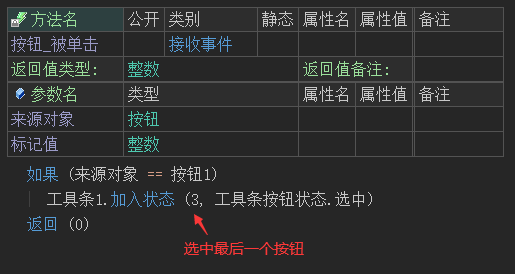
运行效果如下图：
最终点击按钮后，工具条的最后一个按钮会出现选中状态。
注：当按钮为多选按钮时，也可以通过鼠标点击实现切换选中状态。
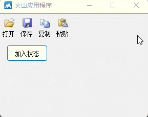
● 去除状态 ● 取状态
“取状态”帮助文档如下图：
通过指定按钮索引，可以取出按钮状态，通常用于判断按钮是否选中或是否被禁止。
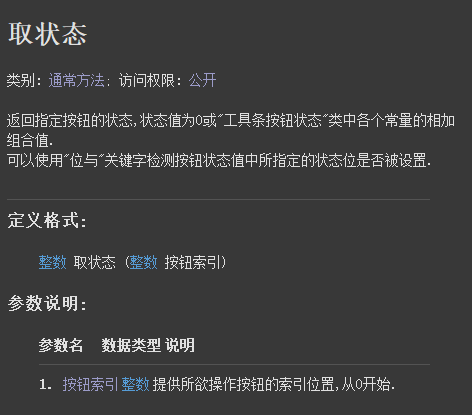
“去除状态”帮助文档如下图：
去掉指定按钮状态，通常可配合“取状态()”方法一起使用。
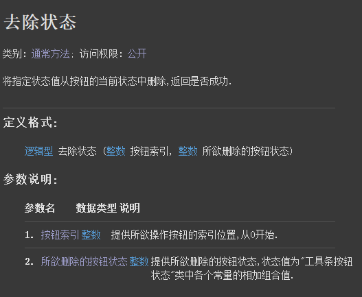
代码编写如下图：
打开工具条按钮设计器，将一个按钮设置为多选，并选中该按钮。
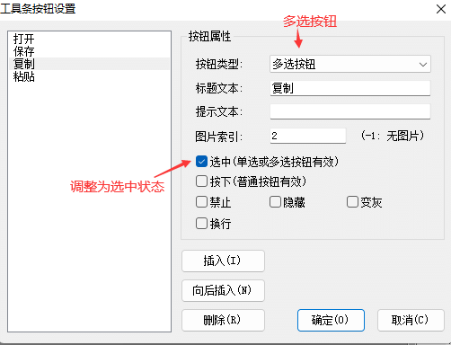
按钮点击后调用“取状态()”方法判断按钮是否被选中，如果被选中就调用“去除状态()”方法去除选中。
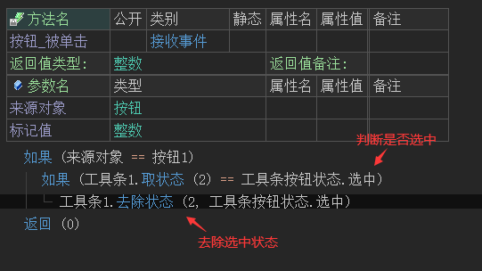
运行效果如下图：
最终点击按钮后可去除选中状态。
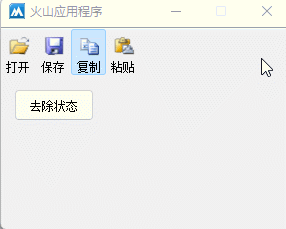
● 取按钮数
帮助文档如下图：
通过本方法可取出所有按钮数量，通常用于对按钮进行批量操作。
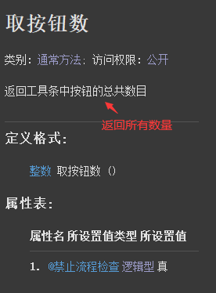
代码编写如下图：
按钮点击后利用计次循环取消所有按钮的选中状态。
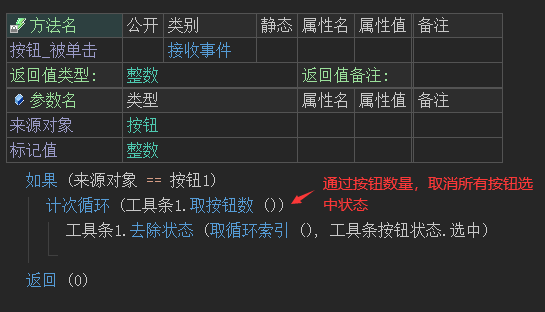
运行效果如下图：
最终所有按钮的选中状态被取消。
● 取提示文本
帮助文档如下图：
可用于取出指定按钮的提示文本，按钮索引从0开始。
代码编写如下图：
打开工具条按钮设计器，就可以预设提示文本，设置提示文本后当鼠标在按钮上停留时就可以弹出提示文本。
按钮点击后取出第一个按钮的提示文本。
运行效果如下图：
最终鼠标停留可以显示提示文本，按钮点击也可以取出提示文本。
● 置提示文本
帮助文档如下图：
用于更新提示文本，本方法共有两个参数。
参数1：提供按钮索引从0开始。
参数2：提供新的提示文本，留空表示无提示。
代码编写如下图：
按钮点击后修改第一个按钮的提示文本。
运行效果如下图：
最终提示文本被修改。
● 更新位置
帮助文档如下图：
用于父窗口尺寸被改变时及时更新工具条位置。
演示操作如下：
正常情况下虽然工具条会默认位于窗口顶部位置，但是当窗口尺寸被改变时，工具条宽度并不会跟着窗口尺寸改变而改变，如下所示：
添加窗口的“尺寸被改变”事件，并在事件下调用工具条的“更新位置()”方法即可。
运行效果如下图：
最终工具条将跟随窗口的尺寸改变而改变。
● 置标题
帮助文档如下图：
通过本方法可设置某个按钮的标题，共有两个参数。
参数1：提供按钮索引，从0开始。
参数2：提供新标题，默认为空文本。
代码编写如下图：
按钮点击后修改第一个按钮的标题。
运行效果如下图：
最终标题被修改。
● 取标题
帮助文档如下图：
用于取出指定按钮的标题，按钮索引从0开始。
代码编写如下图：
按钮点击后取出第一个按钮的标题。
运行效果如下图：
最终工具条第一个按钮标题被取出。
● 被单击(事件)
帮助文档如下图：
当按钮被点击时触发本事件，参数返回按钮索引。
代码编写如下图：
添加本事件后，通过判断按钮索引执行不同的操作。
运行效果如下图：
最终按钮点击被成功执行。
● 被下拉(事件)
帮助文档如下图：
当工具条按钮类型为“下拉按钮”时，点击下拉按钮可以触发本事件。
本事件共有三个参数，参数1返回按钮索引，参数2、3返回按钮坐标，通常用于弹出菜单。
代码编写如下图：
1、首先将按钮类型调整为“下拉按钮”。
2、定义一个工具条菜单，并插入两个菜单项。
3、添加“被下拉”事件，并调用“弹出菜单()”方法弹出工具条菜单。
4、添加窗口“接收到命令”事件，处理菜单点击。
运行效果如下图：
最终可实现点击下拉按钮后可弹出菜单，并执行菜单操作。